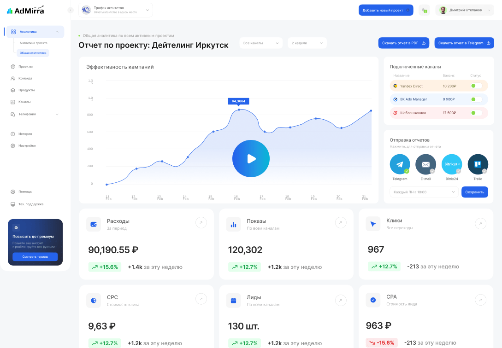
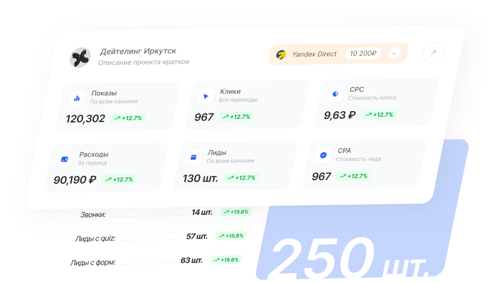
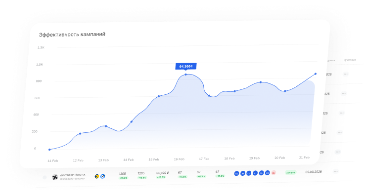
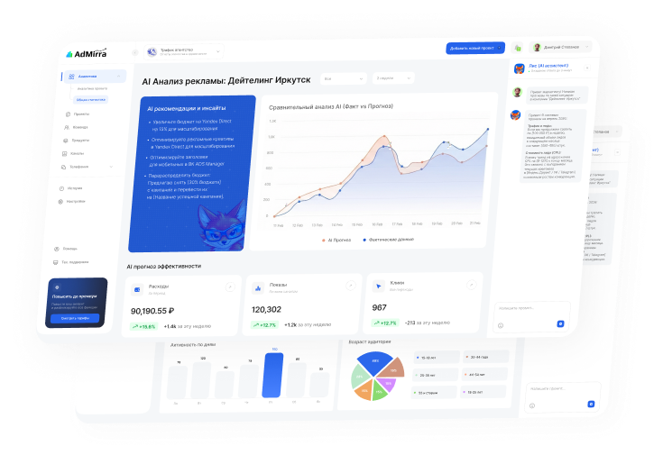

АдМирра заменяет сложные инструменты отчетности, объединяет рекламные кабинеты, лиды и ключевые метрики маркетинга в одном дашборде. Контролируйте CPL, заявки и эффективность рекламы без Excel и ручных отчётов.

Автоматизируйте отчёты
для клиентов, контролируйте CPL и показывайте результаты рекламы.
Вся аналитика Яндекс Директ
и VK Ads в одном дашборде. Расходы, лиды, CPL и лучшие кампании.
Контролируйте рекламные бюджеты, количество заявок и реальные результаты маркетинга.
Реклама сегодня работает
сразу в нескольких системах:
Чтобы понять эффективность рекламы приходится:
На это могут уходить
часы каждую неделю.
На рынке уже есть сервисы маркетинговой аналитики,
но многие из них:
В результате пользователи
тратят время на настройку системы вместо анализа рекламы.
Мы сделали платформу,
которая показывает простую и понятную аналитику рекламы.
В дашборде вы сразу видите:
В отличие от устаревших инструментов бизнесаналитики, сторонних коннекторов или трудоемких рабочих процессов, АдМирра берет на себя основную работу по формированию отчетов, чтобы вы могли сосредоточиться на том, что у вас получается лучше всего — быть крутым маркетологом.
Сервис автоматически собирает данные
из рекламных кабинетов и формирует отчёты по:
Без ручных таблиц и Excel

Наглядные графики и таблицы позволяют быстро оценить эффективность рекламы. Вы сразу видите

Система автоматически анализирует данные рекламных
кампаний и формирует текстовые комментарии к отчёту.
В отчёте вы получаете комментарии и рекомендации, например:
Анализ выполняется с использованием моделей OpenAI
на основе данных рекламных кампаний.

Формируйте наглядные отчёты по рекламе и делитесь ими с клиентами или командой. Графики и таблицы можно экспортировать в PNG, PDF, DOCX, ссылкой — удобно для презентаций, отчетов и переписки.
Отчёты можно отправлять автоматически по расписанию:
Забудьте о таблицах, где отчет каждого
специалиста по рекламе имеет разный формат